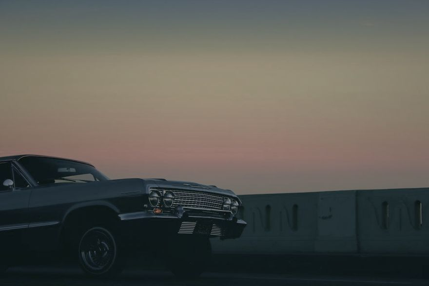

촬영한 색을 끝까지.
단 하나의 워크플로우
카메라 Log 를 불러와 룩을 만들고, 필름 질감을 입히고, 납품 검사를 거쳐 LUT 과 DaVinci Resolve 노드로 내보냅니다. 처음부터 끝까지 한 프로그램, 같은 수식입니다.

섀도는 청록, 하이라이트·피부는 주황. 상업 영화의 대표적인 색 대비
가운데 선을 끌거나 방향키로 움직여 보세요. 왼쪽은 스톡 사진을 ARRI LogC3 로 되돌린 원본, 오른쪽은 CineMaster 엔진이 그레이딩한 실제 결과입니다.
- 9카메라 Log ARRI LogC3 · LogC4, RED Log3G10, Sony S-Log3, Blackmagic Film Gen 5, Canon Log 2 · 3, Apple Log입력 목록 보기
- 10 + 6필름 스톡 네거티브 Vision3 50D · 200T · 250D · 500T, Eterna, Double-X 외 4종. 프린트 2383 · 3513 · 2393 외스톡 목록 보기
- 7 × 11출력 색역 × 감마 Rec.709 · sRGB · P3-D65 · DCI-P3 · Rec.2020, Gamma 2.4 부터 PQ 4000 nit · HLG 까지출력 목록 보기
- 16노드 보정을 노드에 나눠 쌓고, 노드마다 Power Window 와 HSL 퀄리파이어로 범위를 정합니다기능 보기
현장에서 납품까지, 이럴 때 씁니다
-
현장 모니터와 카메라에 넣을 룩이 필요할 때
가벼운 33pt LUT 을 굽고, 카메라 SD 카드에 넣는 폴더 구조 그대로 묶어 줍니다. 지금 룩의 노출과 화이트밸런스를 카메라 세팅으로 되짚어 알려 줍니다.
-
DaVinci Resolve 에서 마무리할 때
Resolve 에서 고른 클립을 따라가며 룩을 만들고, 지정한 노드 하나에만 보냅니다. 노드 구조째 옮기려면 노드 패키지로 내보냅니다.
-
카메라가 여러 대일 때
카메라마다 다른 Log 를 같은 작업 색공간으로 모아 같은 룩을 겁니다. 카메라와 룩의 조합을 한 번에 굽습니다.
-
혼자 만들고, 색보정이 처음일 때
네 단계 가이드 모드를 따라가면 첫 LUT 이 나옵니다. 룩 16개를 내 영상에 입힌 썸네일로 고르고, 참고 사진 한 장에 색을 맞춥니다.
-
납품 규격을 맞춰야 할 때
색역과 클리핑을 먼저 검사하고, 넘친 곳은 규격 안으로 자동 정리합니다. SDR 과 HDR 을 함께 냅니다.
한 프로그램 안에서 할 수 있는 여섯 가지
색을 만들고, 필름을 입히고, 확인하고, 내보냅니다. 항목을 고르면 실제로 쓰는 모습과 요점이 나옵니다.
- 프로그램 엔진, 화면, 브라우저 버전이 같은 수식을 씁니다
- .cube LUT 33 · 65 크기, 범위 세 가지
- LUT 에 담기지 않는 질감은 DCTL 로
- 노드마다 LUT 을 나눈 Resolve 노드 패키지
화면과 내보낸 LUT 이 같은지는 94가지 상태로 매번 자동 비교합니다.
카메라 Log 에서 납품 색공간까지
어떤 카메라로 찍었든 하나의 작업 색공간으로 옮긴 뒤 룩을 만들고, 마지막에 납품 색공간으로 내보냅니다.
카메라 Log 9종을 읽습니다. 이름을 누르면 같은 장면을 그 카메라로 기록했을 때의 원본이 보입니다.
프로그램에서는 이렇게 고릅니다
MEDIA 페이지의 Manufacturer · Log / Gamut 에서 고릅니다. 영상을 불러오면 자동으로 추천합니다.

영상을 불러오면 메타데이터를 보고 카메라와 Log 를 추천합니다.
룩은 카메라 색이 아니라 작업 색공간에서 만듭니다. 그래서 한 번 만든 룩을 다른 카메라 영상에도 그대로 씁니다.
프로그램에서는 이렇게 고릅니다
MEDIA 페이지의 Working Space 에서 고릅니다.
- 색순응Bradford · CAT02 · XYZ Scaling
- 화이트밸런스색온도 · 틴트 · Green 젤 · Mired
- 피부색 보호스킨톤 라인 기준, 룩을 바꿔도 유지

출력 색역 7종과 감마 11종을 골라 조합합니다. 이름을 누르면 그 규격으로 내보낸 그림이 보입니다.
프로그램에서는 이렇게 고릅니다
DELIVER 페이지의 Output Color Space · Output Gamma 에서 고릅니다.
색역 7
감마 · EOTF 11
- Full카메라 Log 에서 화면까지 LUT 하나로
- Look-OnlyCST 사이에 넣는, 룩만 담은 LUT
- Scene노출 · 화이트밸런스와 룩까지, 출력 변환은 빼고

HDR 은 MaxCLL · MaxFALL 을 재고 Dolby Vision XML 과 SDR 트림을 함께 만듭니다. Mac 의 QuickTime 감마 차이는 Rec.709-A 로 맞춥니다.
네거티브와 프린트를 따로 골라 현상소처럼 두 단계를 거칩니다. 이름을 누르면 그 필름의 느낌이 보입니다.
프로그램에서는 이렇게 고릅니다
FILM LAB 페이지에서 조합 버튼을 누르거나 Negative · Print Stock 을 따로 고릅니다.
네거티브 10
프린트 6
- 현상Push / Pull 증감, 프린터 라이트, CMY 헤드
- 질감그레인 · 할레이션 · 블룸 · 게이트 위브
- 나만의 스톡갖고 있는 필름 LUT 을 읽어 슬롯 10개에 저장
네거티브와 프린트를 함께 쓰면 조합은 60가지입니다. 스톡 이름은 닮게 만든 대상을 가리키며, 각 제조사와는 관계가 없습니다.
불러오기부터 납품까지, 다섯 페이지가 한 줄로 이어집니다
프로그램 아래쪽의 다섯 페이지를 왼쪽부터 차례로 지나면 끝납니다. 프로그램을 바꾸거나 파일을 옮길 일이 없습니다.
원본 Log 스틸이나 영상을 불러오면 카메라와 Log 종류를 알아서 추천합니다. 드라이브를 썸네일로 둘러보고 쓸 클립을 미디어 풀에 모아 두며, 레퍼런스 스틸을 올려 색을 맞출 준비를 합니다.
룩 하나에서 나오는 파일
- .cube LUT
- 33 또는 65 크기. Log 에서 화면까지 한 번에, 또는 CST 사이에 넣는 Look-Only 로 저장합니다.
- DCTL
- LUT 에 담을 수 없는 샤픈, 그레인, 할레이션, 스킨 소프트너를 Resolve 에서 그대로 겁니다.
- Resolve 노드 패키지
- 노드마다 LUT 과 매트, 노드 트리를 만드는 스크립트를 함께 묶습니다.
- 일괄 내보내기
- Rec.709, P3, HDR10, HLG 등 고른 출력마다 따로 구워 zip 하나로 저장합니다.
- HDR 납품
- HDR10 과 SDR 트림 듀얼 마스터, MaxCLL · MaxFALL, Dolby Vision XML.
- 룩 파일
- 룩 설정 전체를 담은 파일. 나중에 다시 열어 고칩니다.
다운로드
모든 기능을 쓰려면 설치형을, 먼저 둘러보려면 웹 버전을 여세요. 지금 버전은 v3.8.2(2026년 11월 20일)입니다.
| 항목 | 설치형 | 무설치 | 웹 |
|---|---|---|---|
| 어디서나 됩니다 | |||
| 색보정 · 노드 | |||
| 필름 랩 · 스코프 | |||
| .cube LUT 저장 | |||
| 설치형 · 무설치 버전에서만 됩니다 | |||
| Shot Match | |||
| Resolve 연동 | |||
| HDR 납품 | |||
| 미디어 풀 | |||
| Gemini AI 분석 | |||
| 설치와 업데이트 | |||
| 설치 | 마법사 | 압축 풀기 | 필요 없음 |
| 새 버전 알림 | 늘 최신 | ||
파일 정보
- 설치 파일
- CineMaster_AI_Setup_v3.8.2.exe · 179.0 MB
- SHA-256 fba4964f1b5f573a28b78d5e6b4cb473cf8029928632478fe137a38fba843653
- 무설치 버전 (압축만 풀면 실행)
- CineMaster_AI_Portable_v3.8.2_Windows.zip · 243.2 MB
- SHA-256 59ef72aed6a966cc6e1d7f1cba628fdb35481a774bc12d08806d54e0b7cbbae7
- 웹 버전 zip
- CineMaster_AI_Web_v3.8.2.zip · 2.6 MB
- SHA-256 f304ecb3d8e3fea2f60b62e0a858bb3332299ef8860801579d6fd96b554cad71
- 사용설명서 PDF
- CineMaster_AI_v3.8.2_Manual_KR.pdf · 6.4 MB
받은 파일이 이 페이지의 파일과 같은지 확인하려면 PowerShell 에서 Get-FileHash 파일이름 을 실행해 위 SHA-256 과 비교하세요.
웹 버전은 이 페이지 안에서 열립니다. 사진과 영상은 내 브라우저 안에서만 처리되고 어디에도 올라가지 않습니다.

웹 버전은 서버 없이 브라우저만으로 돌아갑니다. 색보정, 노드, Power Window, 필름 랩, 스코프, .cube 저장은 설치형과 같은 수식으로 동작합니다. Shot Match, Resolve 연동, 미디어 풀, HDR 납품처럼 PC 쪽 프로그램이 계산하는 기능은 설치형에서 쓰세요.
PC 화면 기준으로 만들었습니다. 휴대폰에서는 권장하지 않습니다. 인터넷 없이 쓰려면 웹 버전 zip, 2.6 MB 을 받아 압축을 풀고 index.html 을 여세요.
필요한 환경
- Windows 10 또는 11, 64비트
- WebGL2 를 지원하는 그래픽 (최근 몇 년 안의 PC 면 대부분 됩니다)
- 메모리 8GB 이상, 화면 1920×1080 이상 권장
- 웹 버전은 Chrome 또는 Edge 최신판
- Resolve 연동은 DaVinci Resolve Studio
설치 순서
- 설치 파일 받기를 눌러
CineMaster_AI_Setup_v3.8.2.exe을 내려받습니다. - 내려받은 파일을 실행합니다.
- 다음과 설치를 차례로 누릅니다.
- 바탕화면의 CineMaster AI 아이콘으로 실행합니다.
새 버전은 새 설치 파일을 그대로 실행하면 덮어 설치됩니다. 만든 룩과 설정은 그대로 남습니다.
"Windows의 PC 보호" 창이 뜨면
설치 파일에 아직 코드 서명 인증서가 없어서, 처음 실행할 때 Windows SmartScreen 이 파란 창을 띄웁니다. 아래 순서로 실행하세요.
- 창 안의 추가 정보를 누릅니다.
- 아래에 생긴 실행 버튼을 누릅니다.
더 보기

사용설명서
실제 화면에 번호를 붙이고 쉬운 말로 풀었습니다. 처음 쓰는 분도 순서대로 따라 할 수 있습니다.
- 시작하기와 화면 구성
- 5분 따라 하기: 첫 LUT 만들기
- 레퍼런스로 색 따라 하기
- 다섯 페이지 둘러보기와 미디어 풀
- 컬러 휠과 커브
- 노드와 Power Window
- 스코프와 화면 보기 도구
- DaVinci Resolve 로 가져가기
- 단축키와 문제 해결
CineMaster_AI_v3.8.2_Manual_KR.pdf · 6.4 MB
설명서의 그림은 v3.7 화면이라 지금 화면과 배치가 다른 곳이 있습니다. 새 설명서를 준비하고 있습니다.
처음 누를 때 멈추던 것 해결
- 앱을 켠 직후 2초쯤 화면이 멈추던 것을 없앴습니다. 색 계산 준비를 뒤에서 하므로, 켜자마자 눌러도 바로 반응합니다.
- 샘플 룩 · 3D Cube · 스포이드 보정 · LUT 굽기를 처음 쓸 때 1초 넘게 멈추던 것을 없앴습니다. 필요한 준비를 화면이 뜬 직후 미리 해 둡니다.
- 샘플 룩 창이 더 빨리 열립니다. 미리보기 16칸을 한꺼번에 만들지 않고 차례로 채웁니다.
- 내보내는 LUT 과 수식은 그대로입니다. 예전에 저장한 룩 파일도 그대로 열립니다.
이전 버전 20개 보기
새 로고 · 더 잘 보이는 글자 · 가벼워진 화면
- 로고를 새로 만들었습니다. 알약 세 개가 비스듬히 쌓여 틸에서 오렌지로 넘어가는 모양이며, 창 · 작업 표시줄 · 바탕화면 아이콘이 바뀝니다.
- 글자가 더 잘 보입니다. 숫자와 라벨에 쓰던 가는 고정폭 글꼴을 본문 글꼴로 바꾸고, 굵기와 작은 글자 크기를 한 단계씩 올리고, 흐린 글자색을 밝혔습니다.
- 그래프 크기를 마우스 휠로 바꿀 수 있습니다. FILM LAB 의 D-LogE 곡선과 HDR Zones 의 존 히스토그램 위에서 휠을 굴리면 줄고 늘어나며, 더블클릭하면 원래 크기로 돌아갑니다.
- 화면이 가벼워졌습니다. 값을 바꿀 때마다 화면 전체가 다시 그려지던 것을 없애고, 주기적으로 다시 그리던 그래프는 바뀐 때만 그립니다.
- 내보내는 LUT 과 수식은 그대로입니다. 예전에 저장한 룩 파일도 그대로 열립니다.
화면을 전부 새로 다듬었습니다
- 화면 전체를 평면 디자인으로 다시 만들었습니다. 헤더 · 뷰포트 도구줄 · 스코프 · 아래 작업 칸이 창 크기에 맞춰 스스로 정리되고, 작은 창에서도 가로 스크롤이 생기지 않습니다.
- 글꼴을 Pretendard 와 JetBrains Mono 로 바꿔 글자와 숫자가 더 또렷하게 읽힙니다.
- 카드 안의 긴 설명을 없애고, 카드 오른쪽 위의 ? 버튼을 누르면 요약 · 조작 팁 · 단축키가 열리게 했습니다.
- COLOR 페이지: MASTER 를 아래 작업 칸 왼쪽의 세로 패널로 옮기고, Primaries · HDR Zones(6구간을 한 화면에) · 3D Warper(점을 직접 끌기, 격자 밀도, Chroma·Luma 보기, 뷰포트에서 끌기) · Mixer · Power Window 를 새로 구성했습니다.
- 새 색 도구: Color Compressor 의 Range Width, 합성의 암부 · 명부 보호, Film Lab 의 Print Contrast · Black Point, Skin Hue Uniformity, Skin Midtone Softener, 퀄리파이어의 Clean Black · Clean White · Matte Blur, 스킨톤 레이더와 타깃 스킨 프리셋.
- DELIVER 페이지: 출력 색역 · 감마 그래프, LUT 정확도 리포트, 파일 이름 규칙 버튼, 여러 출력을 한 번에 굽는 일괄 내보내기를 더했습니다.
- 스코프 창을 정리하고, 오른쪽의 세로 글자 탭을 아이콘 탭으로 바꿨습니다.
- 'JSON' 이라는 표기를 '룩 파일' 로 바꿨습니다 (룩 파일 저장 · 룩 파일 불러오기). 예전에 저장한 파일은 그대로 열립니다.
- 설정 · 가이드 창을 필요할 때 불러와 앱이 조금 더 빨리 열립니다.
사용설명서를 처음부터 다시 만들었습니다
- 사용설명서를 버전별 추가 설명이 아닌 프로그램 전체 설명서로 새로 썼습니다. 모든 그림을 최신 화면으로 다시 찍고, 그림 위 번호와 짧은 설명으로 정리했습니다.
- 헤더의 변경 기록(시계 버튼) 창이 아래 화면에 가려 일부만 보이던 문제를 고쳤습니다.
- DELIVER 페이지의 .CUBE 저장 · Resolve 에 설치 버튼이 좁은 창에서 잘려 보이지 않던 문제를 고쳤습니다. 이제 저장 버튼이 오른쪽에 따로 한 줄로 모여 있습니다.
창을 다시 띄울 때 렉 없애기와 Resolve 와 같은 Log 영상 레벨
- 작업 표시줄에서 창을 다시 띄울 때 화면이 한동안 검게 남던 문제를 고쳤습니다. 이제 누르는 즉시 화면이 보입니다.
- 창을 최소화해 두면 영상 프레임 처리와 Resolve 상태 확인을 쉬어 GPU 와 CPU 를 덜 씁니다.
- 보기 메뉴의 'Log 영상 코드값 그대로' 를 켜면, Resolve 를 거치지 않고 연 Log 영상도 Resolve 에서 LUT 을 건 결과와 같은 밝기로 보입니다. 기본값은 예전과 같습니다.
- Resolve 왕복 검증이 원본 크기에서 계산해, 질감이 많은 장면에서도 정확하게 판정합니다.
- 프로젝트를 내보내면 미디어 풀 목록도 함께 담기고, 가져오면 그대로 이어집니다. 프로젝트를 지우면 그 프로젝트의 미디어 풀 목록도 정리됩니다.
- 사용설명서를 v3.7.1 로 새로 만들었습니다 (메뉴바 · 프로젝트 · 프리뷰 해상도 · Log 영상 레벨).
프로젝트 관리자 · 상단 메뉴바 · 프리뷰 해상도
- DaVinci Resolve 처럼 프로젝트를 만들고 골라 열 수 있습니다. 프로젝트마다 그레이딩 · 히스토리 · Look Vault · 미디어 풀을 따로 저장합니다. 예전 작업은 '기본 프로젝트' 에 그대로 있습니다.
- 화면 맨 위에 파일 · 편집 · 보기 · 재생 · 컬러 · 작업 공간 · 도움말 메뉴가 생겼습니다. 키보드(F10, 방향키)로도 움직일 수 있고, 단축키가 메뉴 옆에 보입니다.
- 뷰포트 도구줄과 환경설정에서 프리뷰 해상도(Full · 1/2 · 1/4)를 고를 수 있습니다. 원본 영상과 내보내는 LUT 은 그대로 두고 화면 처리만 가볍게 해 4K 재생이 부드러워집니다.
- 패널의 글자 크기를 다섯 단계로 정리해 한눈에 읽기 쉬워졌습니다.
더 가벼운 재생과 '준비 중' 설정 모두 열기
- 4K 영상을 재생할 때 화면이 끊기던 원인을 없앴습니다. 스코프가 GPU 를 기다리느라 멈추던 시간이 사라졌고, 영상 프레임이 바뀔 때만 다시 그려 GPU 부담이 크게 줄었습니다.
- 영상의 카메라 정보를 읽는 시간이 절반으로 줄었고, 같은 파일을 다시 열면 바로 읽습니다. 미디어 풀에 클립을 여러 개 넣을 때도 빨라졌습니다.
- 설정에서 '준비 중' 이던 일곱 가지가 모두 동작합니다: Resolve LUT 폴더 지정, 권장 보간 표기, 1D Shaper 기본값, 32bit 프레임버퍼, 컨택트 시트 해상도, 컨폼 핸들, QC 신호 범위.
- Resolve 를 다시 켠 뒤 연결되지 않던 실전 테스트 단계의 원인을 좁혀 종료 절차를 고쳤습니다.
Resolve 연동 화면을 Resolve 결과와 똑같이
- Resolve 를 따라갈 때 CineMaster 화면이 Resolve 에서 LUT 를 건 결과와 같아지도록 원본 프레임을 Resolve 와 같은 레벨로 읽습니다. Log 클립은 코드값을 그대로 씁니다.
- 실제 Resolve 에서 같은 프레임으로 잰 차이가 ΔE 2.5 에서 0.24 로 줄었습니다. 2단계 규격 검사와 왕복 검증도 Resolve 스틸을 그대로 씁니다.
- 연동 설정 도우미가 Resolve 가 꺼져 있을 때, 켜져 있지만 Resolve 안의 스크립트 서버가 시작되지 못했을 때, 외부 스크립팅이 꺼져 있을 때를 나눠 해결 방법을 알려 드립니다.
- 1초마다 확인하는 연결 상태 요청이 색 관리 판단에 필요한 값만 보내 훨씬 가벼워졌습니다. 같은 XML 을 여러 번 가져와도 사본이 늘지 않습니다.
DaVinci Resolve 라이브 연동과 새 미디어 탭
- Resolve 컬러 페이지에서 고른 클립을 CineMaster 가 바로 따라옵니다. 그 클립의 원본 프레임과 카메라 정보를 불러오고, 클립마다 만든 룩을 따로 저장합니다.
- 만든 룩을 LUT 로 구워 그 클립의 지정한 노드 하나에만 보냅니다. Resolve 의 새 그레이드 버전에 넣어 원래 그레이드와 비교하거나 되돌릴 수 있습니다.
- 보내기 전에 방송 · OTT · 유튜브 · 극장 · 영화제 규격으로 검사하고, Resolve 에서 추가로 그레이딩한 결과와 렌더한 파일도 같은 규격으로 다시 검사합니다.
- Resolve 프로젝트의 색 관리(YRGB · RCM · ACES)를 읽어 LUT 범위를 자동으로 고르고, 설정이 맞지 않으면 보내기 전에 해결 방법을 알려 드립니다.
- MEDIA 페이지를 하나의 미디어 탭으로 다시 만들었습니다. PC 의 모든 드라이브를 트리로 둘러보고, 큰 썸네일 위에서 마우스를 움직여 영상을 훑어볼 수 있습니다.
- ffprobe 와 ExifTool 로 카메라 · Log · ISO · 화이트밸런스 · 렌즈 · 타임코드를 읽어 카메라 프로파일을 자동으로 맞춥니다. 직접 바꾼 클립은 그대로 둡니다.
- 위쪽의 원본 · 레퍼런스 칸을 큰 썸네일과 큰 글자로 다시 꾸몄습니다.
강한 그레이드용 음수 접기 옵션과 새 버전 알림
- Look-Only와 Scene-Grade LUT에 음수 접기 옵션을 더했습니다. 강한 그레이드에서 하이라이트 색이 틀어지거나 밝기가 뒤집히는 것을 막습니다.
- Master Bundle의 Master DI LUT에도 같은 옵션을 켤 수 있습니다. 두 옵션 모두 기본은 꺼져 있어 지금까지와 같은 결과가 나옵니다.
- 앱을 열 때 홈페이지에서 새 버전을 확인해 알림과 내려받기 링크를 보여 줍니다. 자동으로 설치하지 않고, 환경설정에서 끌 수 있으며, 인터넷이 없으면 조용히 넘어갑니다.
- 홈페이지를 새로 만들었습니다. 실제 엔진으로 렌더한 Log와 룩 비교, 실제 화면, 설치 파일 크기와 SHA-256, 페이지 안에서 바로 여는 웹 버전을 담았습니다.
미디어 풀과 미디어 스토리지
- DaVinci Resolve처럼 영상과 사진을 미디어 풀에 모아 두고 바로 꺼내 씁니다. 파일은 복사하지 않고 경로로 연결합니다.
- 미디어 스토리지에서 내 PC 드라이브, 구글 드라이브, OneDrive, 즐겨찾는 폴더를 썸네일로 둘러보고 여러 개나 폴더째 추가합니다.
- 빈, 검색, 정렬, 별점, 색 라벨로 정리하고, 더블클릭이나 우클릭, 끌어다 놓기로 원본, 레퍼런스, 컷 1~6에 넣습니다.
- 파일을 옮기면 Media Offline으로 표시하고, 폴더를 지정하면 같은 이름을 찾아 다시 연결합니다.
- 큰 원본 영상도 브라우저에 올리지 않고 서버가 디스크에서 바로 읽습니다.
- 작은 창에서 도구 줄과 마스터 바가 잘리거나 겹치던 문제를 고치고, 컨택트 시트를 컷 수에 맞춰 가운데 배치합니다.
노드 그래프와 Power Window
- 색보정을 노드로 나눠 쌓습니다. 노드 패널은 큰 패널, 한 줄, 떠 있는 창 중에서 고릅니다.
- Power Window로 화면 일부분만 보정합니다 (원형, 선형, 다각형, 방사형, HSL Qualifier).
- 컬러 휠, 커브, 스코프를 DaVinci Resolve와 같은 배치로 바꿨습니다. 스코프 새 창이 떨리던 문제도 고쳤습니다.
- 노드와 뷰어 단축키를 Resolve와 같은 키로 맞췄습니다.
- 환경설정 설명을 쉬운 존댓말로 다시 쓰고, Resolve 매칭 가이드를 그림으로 바꿨습니다.
- 노드 구조를 Resolve용 패키지(노드별 LUT과 매트)로 저장합니다.
화면비와 현장 도구
- 화면비 19종, 프레임라인, 아나모픽 디스퀴즈를 뷰포트에서 바로 봅니다.
- 클린 피드와 스코프를 새 창으로 띄워 듀얼 모니터에서 씁니다.
- MIDI 컨트롤러와 게임패드로 휠과 슬라이더를 움직입니다.
- 렌즈 캐릭터, 젤 필터, 현장용과 후반용 LUT 분리 저장을 더했습니다.
Film Lab과 초보자 가이드
- 네거티브와 프린트 필름을 고르는 Film Lab, 현상과 프린터 라이트를 더했습니다.
- 카메라, 노출, 무드, 저장 4단계로 따라 하는 초보자 가이드 모드를 만들었습니다.
- 룩 16종을 내 영상 썸네일로 고르는 룩 브라우저와 환경설정을 더했습니다.
출력 변환과 모니터링
- Resolve의 CST처럼 출력 색공간과 감마를 따로 고릅니다.
- 스코프 위 커서 위치 표시, 모니터 메뉴, 와이프 방향, 즐겨찾기 핀을 더했습니다.
다크 스튜디오 화면
- 화면 전체를 색보정실에 맞춘 어두운 화면으로 다시 만들었습니다.
- 예전 버전에서 저장한 파일을 자동으로 새 형식으로 올려 엽니다.
Resolve 연동과 HDR
- Resolve 타임라인의 모든 클립을 가져와 한 번에 LUT과 CDL을 거는 기능, HDR10, Dolby Vision, HLG 마스터링을 더했습니다.
다섯 페이지 작업 화면
- MEDIA, CONFORM, COLOR, FILM LAB, DELIVER 다섯 페이지로 작업 순서를 나눴습니다.
후반 마무리 도구
- 타임라인 컨폼(XML, EDL), 카메라별 LUT 묶음, 외부 LUT 분석, 납품 검사, Resolve 직접 연결을 더했습니다.
화면 배치와 False Color
- 칸 크기를 끌어서 바꾸고, False Color와 여러 컷을 한눈에 보는 컨택트 시트를 더했습니다.
Look-Only LUT과 웹 버전
- Look-Only LUT 내보내기와 설치 없이 쓰는 웹 버전을 처음 만들었습니다.
무료인가요?
네. 이 페이지의 설치 파일, 무설치 버전, 웹 버전은 모두 무료로 받아 쓸 수 있습니다.
웹 버전과 설치형은 무엇이 다른가요?
색보정과 LUT 저장은 같은 수식이라 결과가 같습니다. Shot Match, Resolve 연동, 미디어 풀, HDR 납품처럼 PC 쪽 프로그램이 계산하는 기능은 설치형에만 있습니다. 다운로드 탭의 비교표를 참고하세요.
내 영상이 어딘가로 올라가나요?
아니요. 웹 버전은 내 브라우저 안에서, 설치형은 내 PC 안에서만 처리합니다. Gemini AI 분석을 직접 켰을 때만 분석할 스틸 한 장이 구글 서버로 전송됩니다.
새 버전이 나온 것을 어떻게 알 수 있나요?
설치형은 시작할 때 이 홈페이지의 최신 버전을 확인해, 새 버전이 있으면 화면에 알림과 내려받기 링크를 보여 줍니다. 자동으로 설치하지는 않습니다. 환경설정의 인터페이스 항목에서 끌 수 있고, 인터넷이 없으면 조용히 넘어갑니다.
Mac 에서도 쓸 수 있나요?
웹 버전은 Mac 의 Chrome 에서 열립니다. 설치형은 지금은 Windows 용만 배포합니다.
Resolve 에서 LUT 색이 조금 다르게 보여요.
Resolve 의 Project Settings → Color Management 에서 3D lookup table interpolation 을 Tetrahedral 로 바꿔 주세요. Full LUT 뒤에 CST 를 또 걸지 않았는지도 확인하세요. 설명서 Resolve 장에 그림으로 정리해 두었습니다.
설치할 때 백신이나 SmartScreen 이 막아요.
코드 서명 인증서가 없는 새 프로그램이라 나오는 경고입니다. 다운로드 탭의 설치 안내대로 실행하고, 걱정되면 파일 정보의 SHA-256 으로 받은 파일이 같은지 확인하세요.
문의
버그, 사용법, 기능 제안은 메일로 보내 주세요. 쓰고 계신 버전(화면 왼쪽 위)과 무엇을 하다가 생겼는지 함께 적어 주시면 빨리 확인할 수 있습니다.